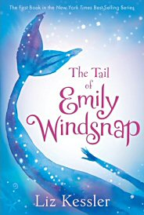

You've found the book review page! I hope you'll find something here you'd like to read also.
I'm only 7 now but I've been reading chapter books since kindergarten. We don't know how many books I've read but it's a lot. Sometimes I'll read a really big book but mostly I like to read book series'. Most of the books I read come from the local library. It doesn't cost anything to read them and I like them better than watching movies. My Mommy and Daddy are really proud of me for being such a good reader!
Dragon Slayer Academy · The New Kid at School
by Kate McMullanWiglaf is a kind and hard working boy who wouldn't hurt a fly. He meets a minstrel who tells him he will be a hero. Wiglaf leaves his family to attend the Dragon Slayer's Acadmemy so he can fullfill his destiny.
I really liked the character, Wiglaf, and his friends. I think you'll love his pig, Daisy, who actually speaks Pig Latin. This book made me laugh out loud and I loved it was short and quick to read. Kate McMullan is my favorite author!
Boys or girls, or anyone, would love this book. I would definitely recommend the Dragon Slayer Academy series to all my friends.
The Tail of Emily Windsnap
by Liz KesslerEmily discovers she's a mermaid. In fact, she's a half mermaid. Her mother is human but she finds out her father is a merman. He's being held prisoner and she wants to help free him. Her parent's love was forbidden. Will she be found out as a mermaid? Will she be able to free her father? Found out by reading The Tail of Emily Windsnap!
I loved this book! I loved how she became a mermaid when in water but on land she would become human again. It was like she was living in two different worlds.
I would recommend this book to my friends at school. I think 2nd graders and up could read this book.
Emily Windsnap and the Monster from the Deep
by Liz KesslerNeptune is furious when Emily wakes the Kraken. Unkown to Emily, she and Shona are the only ones who can control it. Will they find out how to stop it from destroying Mertown before it's too late?
I liked this book because it was action filled. It had lots of mysteries going on all at once. How do they stop the Kraken? What will Neptune do when he finds out?
I would recommend this book kids my age and older.
Emily Windsnap and the Castle in the Mist
by Liz Kessler
It is about Emily and, as the title says, it has a castle that appears to be in the mist. She goes in it. What will happen? That's for you to know!
These books just keep getting better and better! I really liked the ending. The ending was about - Oh, wait! I'm not supposed to tell you the ending!
I would recommend this book to girls ages 7 through 100!
The Girl Who Drank the Moon
by Kelly BarnhillThe story is about a little girl who was meant to be sacrified to the witch. Instead the witch adopted her and raised her as her own child. However, she accidentally enmagiced the young girl by feeding her moonlight.
I loved her name, "Luna", and the idea of her gaining magical abilities by eating moonlight. She also has a tiny pet dragon, "Fyrian", who I love. I wish I could have my own pet dragon.
I think this book would be liked mostly by girls. I can think of some of my friends who would really like it. This is one of the longer books I've read so far.